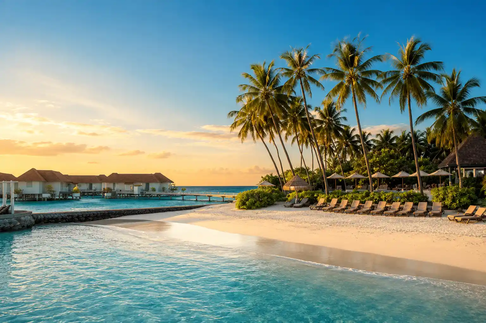

Detail Destinasi
Nikmati pesona hamparan pasir putih yang luas, keasrian hutan lindung, dan ketenangan berkemah di surga tersembunyi Malang Selatan.

Temukan Keajaibannya
Terletak di Desa Tambakrejo, Kecamatan Sumbermanjing Wetan, Kabupaten Malang, Pantai Sendiki menawarkan pesona keindahan alam yang masih sangat asri dan alami. Daya tarik utamanya adalah hamparan pasir putih bersih yang sangat luas berpadu dengan latar belakang hutan lindung yang hijau lebat. Keasrian alamnya yang terjaga menjadikan pantai ini destinasi sempurna untuk melepas penat, menikmati angin laut yang segar, serta mendirikan tenda camping di bawah rindangnya pepohonan tepi pantai.
Atraksi yang Wajib Dikunjungi
Rasakan pengalaman liburan terbaik di kawasan wisata Pantai Sendiki
Ayunan Ikonik Pantai Sendiki
Spot foto ayunan kayu legendaris yang berada tepat di atas pasir putih, memberikan kesan estetik dan santai berlatar belakang deburan ombak.

Area Camping Ground Teduh
Area berkemah yang sangat luas di bawah naungan pohon-pohon rindang, menjadikannya salah satu lokasi camping terfavorit di Malang Selatan.

Garis Pantai Pasir Putih
Hamparan pasir putih bersih dan lembut yang membentang luas, sangat ideal untuk berjalan santai, berolahraga, atau sekadar menikmati angin laut.
Jelajahi Area Pantai
Peta lokasi interaktif titik-titik penting dan fasilitas utama di kawasan wisata Pantai Sendiki
Informasi Penting Perjalanan
Semua hal mendasar yang wajib Anda ketahui sebelum berkunjung ke Pantai Sendiki
Waktu Terbaik Berkunjung
Bulan Mei hingga September. Pagi hari untuk kesegaran udara maksimal atau sore hari untuk menikmati suasana syahdu tanpa terik matahari berlebih.
Cuaca & Karakteristik
Iklim tropis pesisir. Pantai ini menghadap laut lepas sehingga memiliki karakteristik ombak besar khas Pantai Selatan, sangat eksotis namun perlu kewaspadaan.
Mata Uang & Bahasa
Mata uang resmi yang digunakan adalah Rupiah (IDR). Bahasa komunikasi sehari-hari menggunakan Bahasa Indonesia dan Bahasa Jawa.
Tiket Masuk & Retribusi
Tiket masuk berkisar Rp15.000 per orang. Tarif parkir sepeda motor Rp5.000 dan mobil Rp10.000. Terdapat biaya tambahan retribusi kebersihan jika Anda berkemah.
Tips Lokal & Wawasan Budaya
- Jangan melewatkan kesempatan berfoto di ayunan kayu besar yang menjadi ikon utama keindahan Pantai Sendiki.
- Jika berniat camping, pilihlah area di bawah pepohonan agar terhindar dari terik matahari langsung dan angin laut malam.
- Bawalah perbekalan makanan atau logistik cadangan yang cukup jika Anda berencana menginap atau camping dalam waktu lama.
- Selalu jaga kebersihan kawasan pantai dengan mengumpulkan kembali sampah plastik bekas makanan Anda ke tempatnya.
- Patuhi papan larangan berenang demi keselamatan, mengingat karakteristik ombak Pantai Selatan yang cukup besar dan kuat.
- Siapkan uang tunai (cash) cadangan yang memadai karena mesin ATM dan sinyal internet di lokasi terkadang kurang stabil.